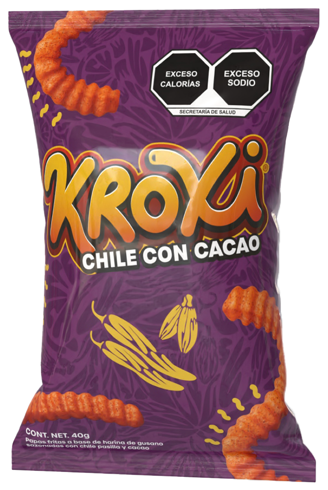
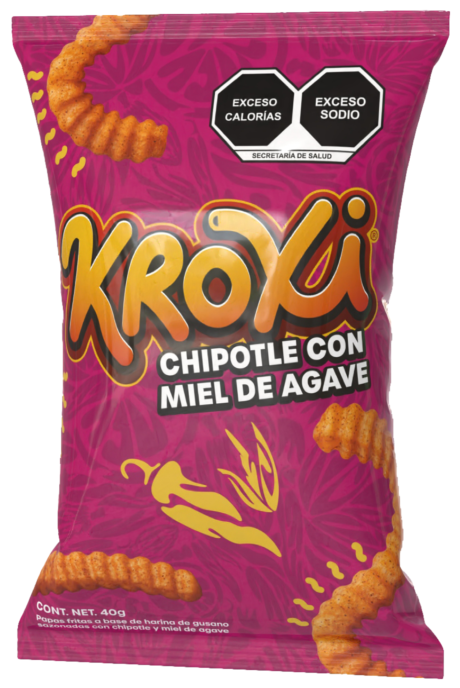
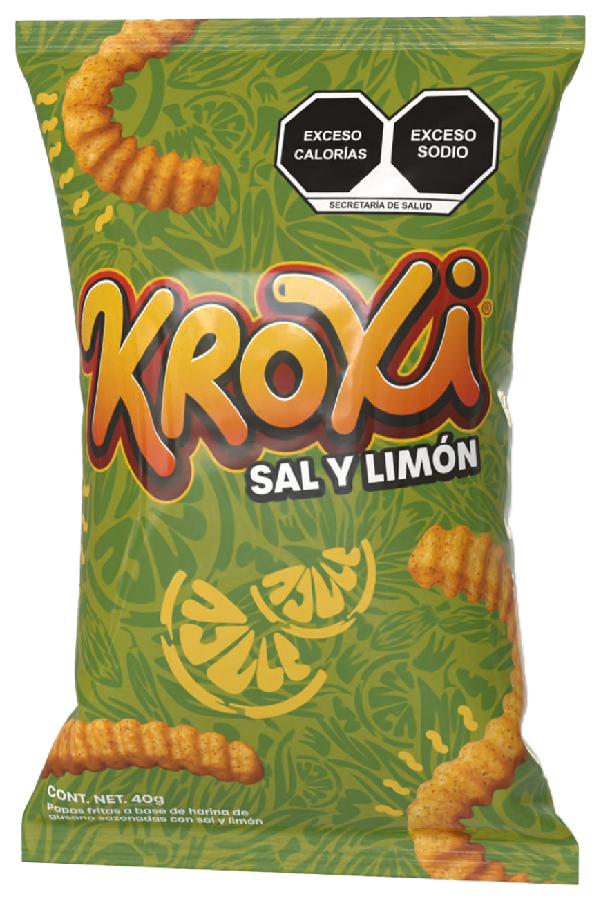
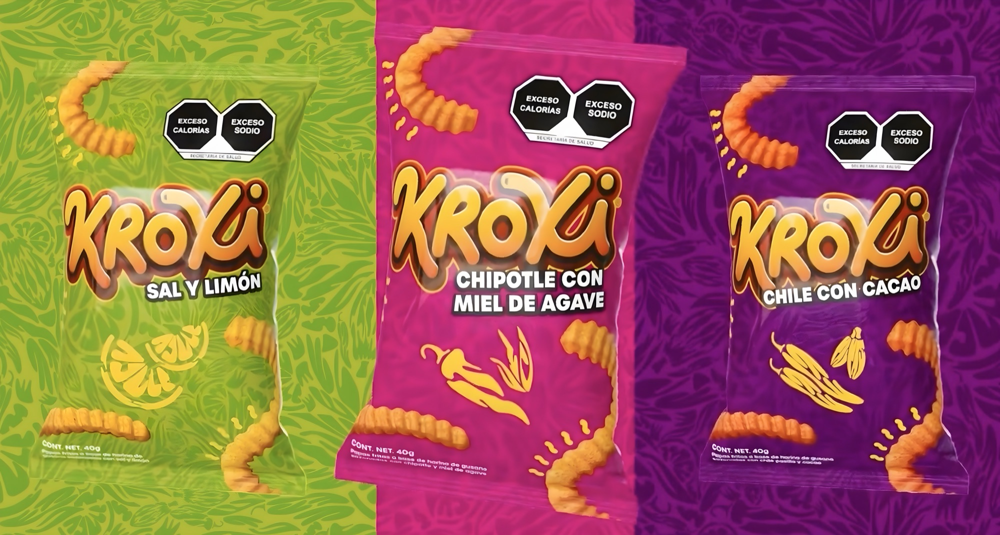

jv
El logotipo y la firma visual del portafolio.
DESIGN.md · versión alpha
Alegre, orgánico y extrovertido.
La referencia visual del portafolio de Javier Valencia: formas suaves y redondeadas, mucho aire y un contraste claro entre el verde profundo y el fondo hueso. El diseño luce los proyectos, no compite con ellos.
01 · Overview
Un trazo continuo, hecho a mano como una firma.
jv es un monograma caligráfico que forma las letras «jv» de Javier Valencia. No hay símbolo aparte: el propio trazo es la marca, y sus curvas y su grosor uniforme son el origen de todo lo orgánico del sistema.
jv
El logotipo y la firma visual del portafolio.
Javier Valencia
En el CV, en la presentación formal y cuando el tono es serio. En el CV siempre aparece así.
jav
Para un saludo o un tono cercano. Nunca como nombre en el CV.
02 · Colors
Dos verdes de marca, un rojo de acento y una base cálida.
Todos los colores son planos: no se usa ningún degradado. Haz clic en una muestra para copiar su código.
Verde fuerte
#004804{colors.primary}
Verde claro
#ADF3AF{colors.secondary}
Rojo
#FF1542{colors.tertiary}
Hueso
#FFF8EB{colors.neutral}
Casi negro
#111111{colors.on-surface}
Verde suave
#EAF7E4{colors.surface-soft}
Verde medio
#0E6012{colors.surface-inverse-soft}
El contraste se calcula en vivo con los colores de los tokens. El mínimo para texto normal es 4.5:1 y para texto grande, 3:1.
Títulos
Cuerpo
Botón
Títulos
Cuerpo
Recuadro
Recuadro
Prohibido
Prohibido
03 · Typography
La jerarquía nace del contraste entre Bold y Light.
Dos familias sans serif de licencia libre (Google Fonts), incluidas en el proyecto como .woff2.
{typography.display}
Geométrica, con curvas muy redondas que acompañan el trazo del logo.
ABCDEFGHIJKLMNÑOPQRSTUVWXYZ
abcdefghijklmnñopqrstuvwxyz
0123456789 ¿?¡!
{typography.body}
Neutra, clara y muy legible en pantalla.
ABCDEFGHIJKLMNÑOPQRSTUVWXYZ
abcdefghijklmnñopqrstuvwxyz
0123456789 ¿?¡!
Sistema jv
Proyectos
Diseño orgánico, con mucho aire
Diseñador de interfaces
Me gusta el diseño orgánico, los contrastes fuertes y el minimalismo. Este portafolio junta las tres cosas.
Branding · Diseño web
Ver proyecto
Sobre mí
Diseño que acompaña, no que compite.
El título pesado en mayúsculas y el subtítulo ligero justo debajo crean la diferencia. El cuerpo en Inter mantiene la lectura cómoda y neutra.
04 · Layout
Unidad de 8px y mucho aire.
Contenido de máximo 1200px, centrado, con 24px de margen lateral y un header fijo de 80px.
8px16px24px32px48px64px80px96px120px05 · Elevation & Depth
Plano por regla, con una sola excepción.
La profundidad se logra con el color de fondo y con el relleno de los recuadros. La única sombra del sistema aparece en las tarjetas de proyecto al pasar el cursor.
Tarjeta de proyecto · hover
Pasa el cursor
0 12px 32px rgba(0, 72, 4, 0.15)
06 · Shapes
Todo va redondeado. No hay esquinas rectas.
Solo recuadros redondeados: nada de manchas, ondas ni formas libres.
rounded.sm
rounded.md
rounded.full
rounded.full
La tarjeta usa 24px.
La imagen interior usa 16px, un poco menos, para que las curvas queden paralelas.
El borde sin relleno es de los botones. Los recuadros van rellenos y sin borde: verde suave en secciones hueso y verde medio en secciones verdes. La única excepción son las tarjetas de proyecto, que conservan su borde.
Verde suave
Fondo #EAF7E4, sin borde. Títulos en verde fuerte y texto en casi negro.
Píldora · verde fuerte
Verde medio
Fondo #0E6012, sin borde. Títulos en verde claro y texto en hueso.
07 · Components
Piezas que se repiten en todo el portafolio.
Todos los cambios al pasar el cursor duran 0.3 s con curva ease-out.
Se puede pulsar · solo contorno
No se pulsa · relleno, sin borde
Recuadro de información
Recuadros y píldoras van rellenos. Las píldoras usan verde fuerte sobre hueso y verde medio sobre verde fuerte.
button-light · sección hueso
Ver proyectobutton-dark · sección verde fuerte
Contáctamenav-link · reposo, hover y sección activa en rojo
2024 – actualidad
2023 – 2024
En sección hueso
Fondo verde suave, sin borde, esquinas de 24px y 32px de relleno.
En sección verde
Fondo verde medio, título en verde claro y texto en hueso.
Software
Educación
Licenciatura en Diseño Gráfico Digital
card-project-dark · hueso, sin borde, sombra casi negra
contact-link · el círculo pasa a hueso al pasar el cursor
back-link
Volver a proyectos



image-viewer · image-viewer-arrow
project-feature · proyecto sin galería
footer-dark · pie de página de los proyectos
Javier Valencia
08 · Do's and Don'ts
Lo que sí y lo que no.